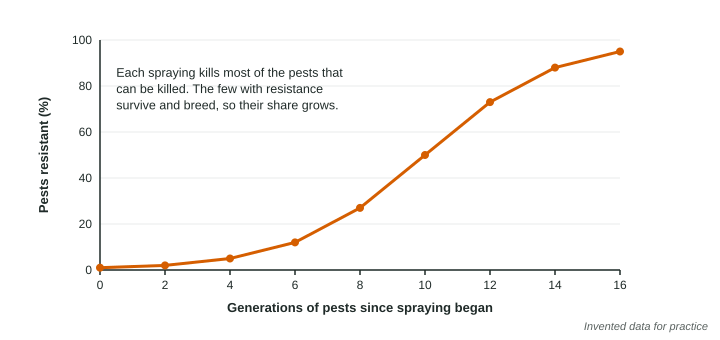

Pest Control Methods
Pesticides protect crops from insects, weeds and fungi, but they also kill nontarget organisms, run off into water, and lose their power as pests evolve resistance by natural selection.
Part 1 · Hook
Why this matters
Part 2 · Before you start
What this builds on
Part 3 · Prerequisite check
Quick check before you start
1. What is natural selection?
- Individuals with traits that help them survive and reproduce leave more offspring, so those traits become more common
- Individuals change their traits during their lives to fit their environment
- People choose which plants and animals will breed
- Species that are not needed by an ecosystem die out
Show the answer
Natural selection acts on variation that already exists; traits that help survival become more common over generations.
- Correct: Individuals with traits that help them survive and reproduce leave more offspring, so those traits become more common:
- Individuals change their traits during their lives to fit their environment:
- People choose which plants and animals will breed:
- Species that are not needed by an ecosystem die out:
2. Why is a monoculture especially attractive to a pest?
- It offers a huge supply of one food plant in one place
- It has more predators of the pest than a mixed field
- It is sprayed less often than other kinds of fields
- It grows in colder climates where pests thrive
Show the answer
A large field of one crop is a vast, easy food supply for the pests of that crop.
- Correct: It offers a huge supply of one food plant in one place:
- It has more predators of the pest than a mixed field:
- It is sprayed less often than other kinds of fields:
- It grows in colder climates where pests thrive:
Part 4 · See it
See it first

Part 5 · Step by step
How it works, step by step
- A few pests in a large population carry a gene that lets them survive the pesticidespraying kills most pests but not those few
- The resistant survivors breed with each otherthe next generation has a larger share of resistant pests
- Spraying continues for many generationsmost of the population is resistant and the pesticide stops working
- Farmers respond by spraying more often or using new chemicalscosts rise, more nontarget organisms die, and resistance builds again
Part 6 · Key ideas
Key ideas
- Pesticides include insecticides (insects), herbicides (weeds) and fungicides (fungi). They raise yields by protecting crops.
- Most pesticides kill nontarget organisms too: pollinators such as bees, predators that ate the pests, and fish and frogs when the chemicals run off into water.
- Pesticide resistance is natural selection: spraying kills the susceptible pests, the resistant ones survive and breed. Resistance is in the pests' genes, not learned.
- Genetically modified crops can reduce spraying for some pests (a crop that makes its own insecticide), but pests can evolve resistance to them too.
Part 7 · Misconception
A common mistake
The wrong idea: Pests become resistant because the pesticide makes each pest stronger, or because pests get used to it.
What actually happens: No single pest changes. A few pests already carry genes that let them survive; spraying kills the others, and the survivors pass those genes to their offspring, so the population changes over generations.
Part 8 · Check yourself
Check yourself
Exam-style questions. Anything you miss goes into your review queue.
1. A herbicide is a pesticide used to kill which kind of organism?
- Weeds and other unwanted plants
- Insects that eat crops
- Fungi that rot fruit
- Rats and mice that eat stored grain
Show the answer
Herbicides target plants; insecticides target insects; fungicides target fungi.
- Correct: Weeds and other unwanted plants: Right: herbicides kill plants.
- Insects that eat crops: Insects are killed by insecticides.
- Fungi that rot fruit: Fungi are killed by fungicides.
- Rats and mice that eat stored grain: Rodents are killed by rodenticides.
2. Spraying an insecticide kills 99% of the beetles in a field. Over many years the spray works less and less well. What explains this?
- The 1% that survived carried genes for resistance and passed them on, so resistant beetles became common
- The beetles that survived learned to avoid the spray and taught their offspring how to do it
- The spray made each surviving beetle stronger, so it could survive much larger amounts in later years
- The insecticide broke down in storage, so later sprayings had less of the active chemical
Show the answer
Resistance is natural selection: survivors with resistance genes breed, so their share grows each generation.
- Correct: The 1% that survived carried genes for resistance and passed them on, so resistant beetles became common: Right: selection of existing resistance genes.
- The beetles that survived learned to avoid the spray and taught their offspring how to do it: Resistance is inherited in genes, not learned and taught.
- The spray made each surviving beetle stronger, so it could survive much larger amounts in later years: Spraying does not make individual pests stronger; it removes the susceptible ones.
- The insecticide broke down in storage, so later sprayings had less of the active chemical: The chemical is not the problem; the population has changed.
Data
Ten years of spraying one insecticide on a cotton farm
| Year | Sprayings per season | Insecticide used (kg per ha) | Pests killed by one spraying (%) | Predatory beetles per 100 plants |
|---|---|---|---|---|
| 1 | 2 | 1.0 | 96 | 40 |
| 4 | 3 | 1.5 | 85 | 22 |
| 7 | 5 | 2.5 | 60 | 9 |
| 10 | 7 | 3.5 | 35 | 3 |
3. Write the setup for the percent change in insecticide used per hectare from year 1 to year 10, then give the answer.
Type the setup as on the exam, with brackets and units, then the answer.
Show the answer
- Setup: ; answer 250 %
4. Which conclusion is best supported by the table?
- As resistance grew, the farm sprayed more often, and the beetles that eat pests declined
- As resistance grew, the farm sprayed less often, and the beetles that eat pests increased
- Spraying more often made each spraying more effective at killing the pests
- The beetles that eat pests were not affected by the change in spraying
Show the answer
Sprayings went 2 to 7, the kill rate fell 96% to 35%, and beetles fell 40 to 3 per 100 plants.
- Correct: As resistance grew, the farm sprayed more often, and the beetles that eat pests declined: Right: more spraying, weaker effect, fewer natural predators.
- As resistance grew, the farm sprayed less often, and the beetles that eat pests increased: Sprayings increased, and beetles decreased.
- Spraying more often made each spraying more effective at killing the pests: Kill rate fell even as sprayings rose.
- The beetles that eat pests were not affected by the change in spraying: Beetles fell from 40 to 3 per 100 plants.
5. Explain how the decline in predatory beetles could make the farm's pest problem worse.
Build the answer part by part, then write it in your own words.
Show the answer
Each link: more spraying kills the beetles as nontarget organisms; with fewer beetles, fewer pests are eaten; so the pest population grows faster between sprayings and the farm sprays even more.
- An answer that earns the point: Spraying kills the predatory beetles as well as the pests; with fewer beetles, fewer pests are eaten, which leads to pests multiplying faster between sprayings, so the farm sprays even more.
6. A farmer plants corn that is genetically modified to make a protein toxic to caterpillars. Which outcome is most likely after many years if every farm in the region plants it?
- Caterpillars resistant to the protein become common, because they are the ones that survive and breed
- Caterpillars disappear from the region permanently, because no caterpillar can survive the protein
- Farmers spray more insecticide on the corn each year, because the protein attracts the caterpillars
- Bees disappear from the region, because the protein is toxic to bees in the same way
Show the answer
A trait that kills pests selects for pests that can survive it, just like a spray. Planting refuges of ordinary corn is used to slow this.
- Correct: Caterpillars resistant to the protein become common, because they are the ones that survive and breed: Right: the GM trait is a selection pressure like any pesticide.
- Caterpillars disappear from the region permanently, because no caterpillar can survive the protein: Natural selection favors any survivors, so resistance can spread.
- Farmers spray more insecticide on the corn each year, because the protein attracts the caterpillars: The protein is designed to reduce spraying, not increase it.
- Bees disappear from the region, because the protein is toxic to bees in the same way: The protein targets caterpillars; it is not the same for bees.
7. A field holds 2,000,000 caterpillars. One spraying kills 98% of them. How many survive to breed?
Type a number, then its unit (caterpillars). Scale words (2.5 million) and powers of ten (2.5 × 10^6) are read.
Show the answer
Survivors are the 2% not killed:
- Answer: 40,000 caterpillars
Part 9 · Summary
Summary
Part 10 · Up next
What comes next
Part 11 · Connections